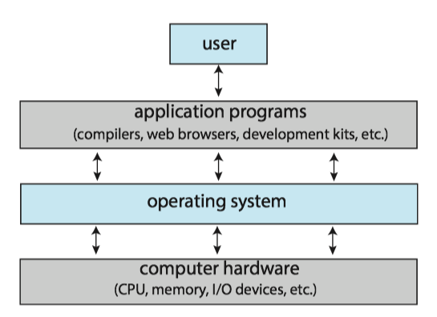
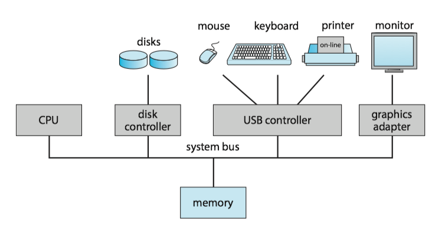
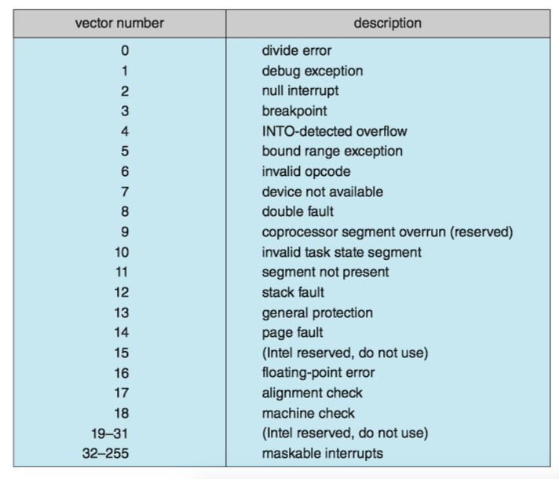
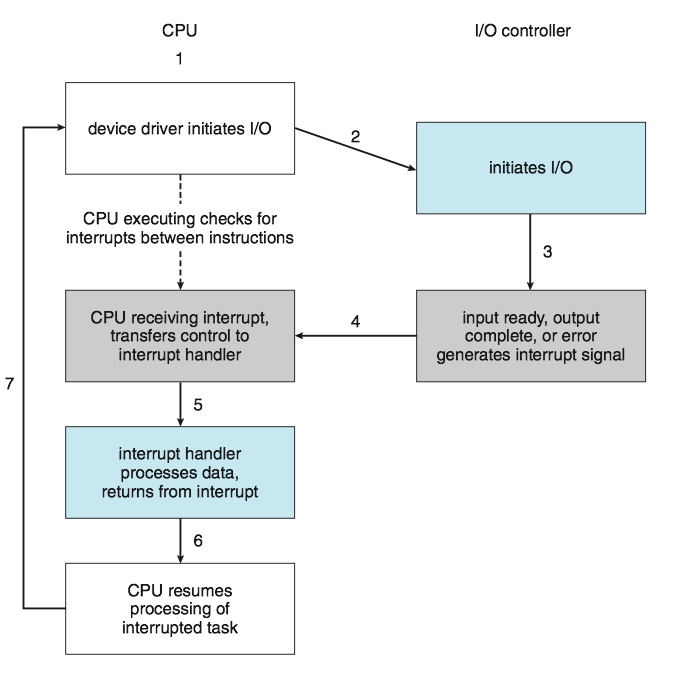
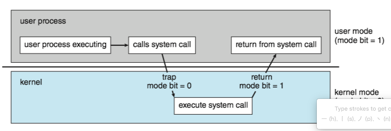
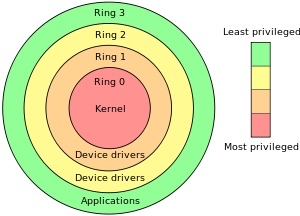
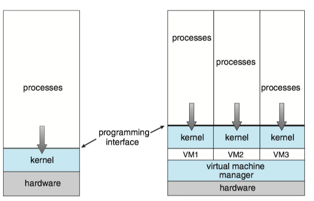

Operating System Concepts 1 - Introduction¶
1. What operating system do¶
There is no completely adequate definition of operating system. A simple viewpoint is that it includes everything a vendor ships. A more common definition is that the operating system is the one program running at all times on computer - usually called kernel .
Three main purposes of an operating system are,
- manages a computer's hardware
- provides a basis for application programs
- acts as an intermediary between the user and hardware
The operating system includes the always running kernel, middleware frameworks that ease application development and provide features, and system programs that aid in managing the system while it is running.
Anything between the kernel and user applications is considered middleware(中间件) [1].
2 Computer-system organisation¶
A computer system can be divided roughly into four components: the hardware, the operating system, the application programs, and a user.

A computer system(计算机系统) consists of one or more CPUs and a number of device controllers(设备控制器) connected through a common bus(总线) that provides access between components and shared memory.
A device controller maintains some local buffer storage(局部缓冲存储) and a set of special-purpose registers.
Typically, operating systems have a device driver(设备驱动) for each device controller. This device driver understands the device controller and provides the rest of the operating system with a uniform interface to the device

Interrupt¶
When the CPU is interrupted, it stops what it is doing and immediately transfers execution to a fixed location. The fixed location usually contains the starting address where the service routine for the interrupt is located.
The interrupt routine(中断程序) is called indirectly through the interrupt vector table（中断向量表).
- Generally, the table of pointers is stored in low memory (the first hundred or so locations).
- These locations hold the addresses of the interrupt service routines for the various devices.
- Interrupt vector is then indexed by a unique number(interrupt vector number, 中断向量号)
- interrupt priority levels(中断优先级)

Some services are provided outside of the kernel by system programs that are loaded into memory at boot time to become system daemons, which run the entire time the kernel is running.

interrupt, exception, trap¶
Unfortunately, there is no clear consensus as to the exact meaning of these terms(exceptions, faults, aborts, traps, and interrupts). Different authors adopt different terms to their own use [ref].
trap(陷阱) or exception(异常): a software-generated interrupt either by an error（e.g. division by zero, or invalid memory access or by a system call. * usual way to invoke a kernel routine (a system call)
interrupt(中断): generated by the hardware (devices like the hard disk, graphics card, I/O ports, etc).
multiprogramming and multitasking¶
Multiprogramming(多道程序) explained:
- The operating system keeps several processes in memory simultaneously.
- The operating system picks and begins to execute one of these processes.
- Eventually, the process may have to wait for some task, such as an I/O operation, to complete.
- When that process needs to wait, the CPU switches to another process, and so on.
- Eventually, the first process finishes waiting and gets the CPU back. As long as at least one process needs to execute, the CPU is never idle.
Multitasking(多任务) is a logical extension of multiprogramming. In multitasking systems, the CPU executes multiple processes by switching among them, but the switches occur frequently, providing the user with a fast response time.
dual-mode¶
In order to ensure the proper execution of the system, we must be able to distinguish between the execution of operating-system code（kernel mode）and user-defined code (user mode).

Mode bit(模式位), is added to the hardware of the computer to indicate the current mode: kernel (0) or user (1).
The concept of modes can be extended beyond two modes.
-
protection rings（保护环) are mechanisms to protect data and functionality from faults (by improving fault tolerance) and malicious behavior (by providing computer security).
-
For intel processors, ring 0 is kernel mode and ring 3 is user mode

timer¶
A timer (定时器) can be set to interrupt the computer after a specified period( usually, 100s hz)
- A variable timer is generally implemented by a fixed-rate clock and a counter.
- The operating system sets the counter. Every time the clock ticks, the counter is decremented.
- When the counter reaches 0, an interrupt occurs.
7 virtualization¶
virtualization(虚拟化) is a technology that allows us to abstract the hardware of a single computer into several different execution environments, thereby creating the illusion that each separate environment is running on its own private computer . * v.s. [different] Emulation involves simulating computer handware in software.

8 Free and Open-Source OS¶
Open-source OS
- source code available
- opposite: closed-source OS
Free OS
- source code available
- allow no-cost use, redistribution, and modification
Arguably, open-source code is more secure than closed-source code because many more eyes are viewing the code.
e.g. OS
- GNU/Linux
- FreeBSD
- Solaris